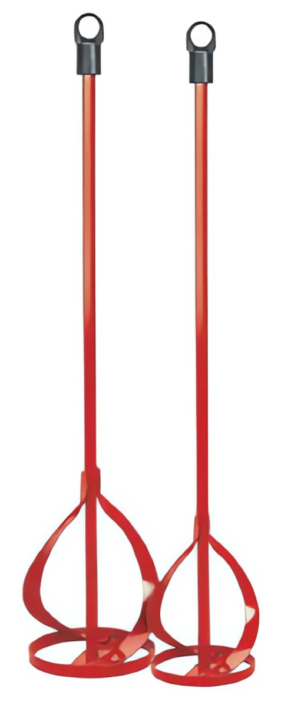

GROZ · Specialty Hand Tools
Paint Mixers
CAT NR PMX/60 · ORD NR 14620
| CAT NR (catalogue number) | PMX/60 |
|---|---|
| ORD NR (order number) | 14620 |
| Box quantity | 80 |
| Dia. of mixing wheel (inch) | 2.3/8 |
| Dia. of mixing wheel (mm) | 60 |
| Fits drill size (inch) | 3/8 |
| Fits drill size (mm) | 9.5 |
| Length (inch) | 16 |
| Length (mm) | 400 |
Ask for a quote The catalogue PDF, page 247
“Ask for a quote” opens this product in the catalogue: add it to your quote and send it. Buyers from Africa, the Gulf and worldwide are welcome; prices in USD, EUR or INR.
From the GROZ Workshop Tools CB-05 catalogue. Not yet verified: these details were read from the printed catalogue automatically; check the catalogue page before ordering.